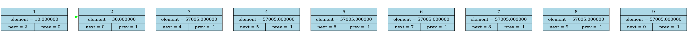
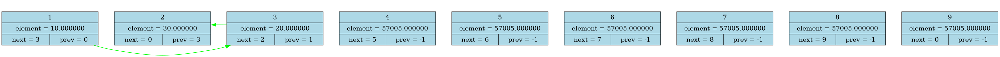

<h1>DUMP FROM src/main.cpp:10</h1>


<h1>DUMP FROM src/main.cpp:14</h1>


<h1>DUMP FROM src/main.cpp:17</h1>


<h1>DUMP FROM src/main.cpp:23


<h1>DUMP FROM src/main.cpp:26</h1>
 

<h1>DUMP FROM src/main.cpp:30</h1>


<h1>DUMP FROM src/main.cpp:33</h1>

